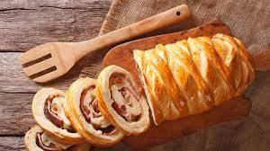

La gastronomía de Venezuela es muy variada, y es el resultado de la mezcla cultural y gastronómica procedentes de Europa y África con la gastronomía de los pueblos indígenas de Venezuela.
En su conjunto ha recibido influencias notables de la gastronomía mediterránea.
Pero hoy vamos a hablar de una receta maravillosa navideña.
Ubicacion
El pan de jamón

El pan de jamón es un pan relleno de jamón, tocineta sofrita, uvas, pasas y aceitunas verdes, por lo general, rellenas con pimiento o pimentón rojo.
Es un pan típico de Venezuela, que forma parte de la gastronomía navideña del país.
Ingredientes
3 cucharadas de levadura seca en pasta
1/2 taza de agua tibia
1 cucharadita de azúcar
4 tazas de harina de trigo
3 cucharadas de azúca
3/4 cucharadita de sal
6 cucharadas de mantequilla
1 huevo
6 cucharadas de leche tibia
1 lb de jamón rebanado
2 tazas de aceitunas verdes picadas en rueditas
1 taza de pasas
1 yema (del huevo)
1 cucharadita de azúcar
Preparación
En un envase pequeño pon la levadura, el agua tibia y una cucharadita de azúcar. Revuelve y deja cubierto por 30 minutos.
Sobre la mesa coloca la harina de trigo y hazle un hueco en el medio. Agrega la levadura con el agua, el azúcar, la sal, la mantequilla, el huevo y empieza a amasar.
A medida que vas amasando agrega la leche poco a poco hasta obtener una masa suave, que se despegue de la superficie fácilmente.
Haz una bola y cúbrela con paño de cocina. Deja reposar la masa por 1 1/2 horas.
Coloca la masa sobre una superficie enharinada y comienza a extenderla con la ayuda de un rodillo hasta obtener un rectángulo de 10 x 18 pulgadas y 1/2 pulgada de espesor aproximadamente.
Encima de la masa distribuye uniformemente el jamón, las aceitunas y las pasas. Luego enrolla firmemente como un brazo gitano. Cierra los extremos con la mano.
Deja reposar los panes en una bandeja cubierta con un paño de cocina y engrasada con una cucharada de mantequilla por una hora.
Precalienta el horno a 400 F.
Coloca los panes a hornear hasta que estén dorados, aproximadamente 20 a 25 minutos.
Bate el amarrillo del huevo y una cucharadita de azúcar
Cuando los panes ya estén dorados, sácalos del horno y báñalos con la mezcla de huevo y azúcar. Hornea por 5 minutos más
Sácalo del horno y deja que se enfrié antes de comerlo
Musica tradicional navideña
video
Explicación grafica de como se prepara un delicioso pan de jamón.